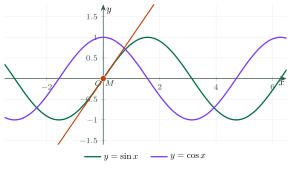
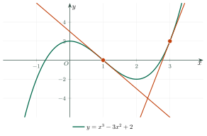

Rules of DifferentiationCác quy tắc tính đạo hàm
Grade 11 · Topic: DerivativesLớp 11 · Chủ đề: Đạo hàm
1Lesson IntroductionGiới thiệu bài học
Learning goalsMục tiêu bài học
By the end of this lesson you can:
Sau bài học này, em có thể:
use the derivatives of \(x^n\), \(\sqrt x\), trigonometric, exponential and logarithmic functions;
sử dụng đạo hàm của \(x^n\), \(\sqrt x\), các hàm lượng giác, hàm mũ, hàm lôgarit;
apply the sum, product and quotient rules;
vận dụng quy tắc đạo hàm của tổng, tích, thương;
differentiate composite functions with the chain rule;
tính đạo hàm của hàm số hợp bằng quy tắc đạo hàm của hàm số hợp;
solve tangent and rate-of-change problems.
giải bài toán tiếp tuyến và tốc độ thay đổi.
2Mathematical VocabularyTừ vựng Toán học
product rule – \((uv)'=u'v+uv'\).
quy tắc đạo hàm của tích – \((uv)'=u'v+uv'\).
quotient rule – \(\left(\dfrac uv\right)'=\dfrac{u'v-uv'}{v^2}\) where \(v\ne0\).
quy tắc đạo hàm của thương – \(\left(\dfrac uv\right)'=\dfrac{u'v-uv'}{v^2}\) với \(v\ne0\).
composite function – a function of the form \(y=f(u(x))\).
hàm số hợp – hàm số dạng \(y=f(u(x))\).
chain rule – \(y'_x=y'_u\cdot u'_x\).
đạo hàm của hàm số hợp – quy tắc \(y'_x=y'_u\cdot u'_x\).
3Useful English PhrasesCụm từ tiếng Anh thường gặp
Differentiate the inside function too.
Nhớ nhân thêm đạo hàm của hàm bên trong.
The derivative of a product is not the product of the derivatives.
Đạo hàm của tích không bằng tích các đạo hàm.
Write the function as a power before differentiating.
Viết hàm số dưới dạng lũy thừa trước khi lấy đạo hàm.
The tangent has slope four at this point.
Tiếp tuyến tại điểm này có hệ số góc bằng 4.
Check the domain first.
Kiểm tra tập xác định trước.
4Prerequisite ReviewÔn tập kiến thức nền
From Bài 31: \(f'(x_0)\) as a limit, \((x^2)'=2x\), \((x^3)'=3x^2\), \(\left(\dfrac1x\right)'=-\dfrac1{x^2}\), tangent \(y=f'(x_0)(x-x_0)+f(x_0)\). From Chapter I and VI: \(\sin\), \(\cos\), \(e^x\), \(\ln x\).
Từ Bài 31: định nghĩa \(f'(x_0)\), \((x^2)'=2x\), \((x^3)'=3x^2\), \(\left(\dfrac1x\right)'=-\dfrac1{x^2}\), tiếp tuyến \(y=f'(x_0)(x-x_0)+f(x_0)\). Từ Chương I và VI: hàm \(\sin\), \(\cos\), \(e^x\), \(\ln x\).
5TheoryLý thuyết
5.1 Derivatives of basic functionsĐạo hàm của một số hàm số thường gặp
| Basic functionHàm số sơ cấp | Composite \(u=u(x)\)Hàm hợp \(u=u(x)\) |
|---|---|
| \((c)'=0\), \((x)'=1\) | — |
| \((x^n)'=nx^{n-1}\) \((n\in\mathbb N^*)\) | \((u^n)'=nu^{n-1}u'\) |
| \((\sqrt x)'=\dfrac1{2\sqrt x}\) \((x>0)\) | \((\sqrt u)'=\dfrac{u'}{2\sqrt u}\) |
| \((\sin x)'=\cos x\) | \((\sin u)'=u'\cos u\) |
| \((\cos x)'=-\sin x\) | \((\cos u)'=-u'\sin u\) |
| \((\tan x)'=\dfrac1{\cos^2x}\) | \((\tan u)'=\dfrac{u'}{\cos^2u}\) |
| \((\cot x)'=-\dfrac1{\sin^2x}\) | \((\cot u)'=-\dfrac{u'}{\sin^2u}\) |
| \((e^x)'=e^x\), \((a^x)'=a^x\ln a\) | \((e^u)'=u'e^u\), \((a^u)'=u'a^u\ln a\) |
| \((\ln x)'=\dfrac1x\), \((\log_ax)'=\dfrac1{x\ln a}\) | \((\ln u)'=\dfrac{u'}{u}\), \((\log_au)'=\dfrac{u'}{u\ln a}\) |
5.2 RulesCác quy tắc
Sum, product, quotientTổng, hiệu, tích, thương
\((u\pm v)'=u'\pm v'\); \((ku)'=ku'\).
\((u\pm v)'=u'\pm v'\); \((ku)'=ku'\).
\((uv)'=u'v+uv'\).
Đạo hàm của tích: \((uv)'=u'v+uv'\).
\(\left(\dfrac uv\right)'=\dfrac{u'v-uv'}{v^2}\) \((v\ne0)\); in particular \(\left(\dfrac{ax+b}{cx+d}\right)'=\dfrac{ad-bc}{(cx+d)^2}\).
Đạo hàm của thương: \(\left(\dfrac uv\right)'=\dfrac{u'v-uv'}{v^2}\) \((v\ne0)\); đặc biệt \(\left(\dfrac{ax+b}{cx+d}\right)'=\dfrac{ad-bc}{(cx+d)^2}\).
Chain ruleĐạo hàm của hàm số hợp
If \(u=g(x)\) has a derivative at \(x\) and \(y=f(u)\) has a derivative at \(u\), then \(y=f(g(x))\) has \[y'_x=y'_u\cdot u'_x.\] Example: \(y=(x^2+1)^5\Rightarrow y'=5(x^2+1)^4\cdot2x\).
Nếu \(u=g(x)\) có đạo hàm tại \(x\) và \(y=f(u)\) có đạo hàm tại \(u\) thì hàm số hợp \(y=f(g(x))\) có đạo hàm \[y'_x=y'_u\cdot u'_x.\] Ví dụ: \(y=(x^2+1)^5\Rightarrow y'=5(x^2+1)^4\cdot2x\).

Watch out!Lưu ý
\((uv)'\ne u'v'\) and \(\left(\dfrac uv\right)'\ne\dfrac{u'}{v'}\). For \(\sin 3x\), \(e^{2x}\), \((2x+1)^5\) do not forget the factor \(u'\).
\((uv)'\ne u'v'\) và \(\left(\dfrac uv\right)'\ne\dfrac{u'}{v'}\). Với \(\sin 3x\), \(e^{2x}\), \((2x+1)^5\) đừng quên nhân thêm \(u'\).
6Worked ExamplesVí dụ có lời giải
ExampleVí dụ 1BasicCơ bản – Polynomials and rootsĐa thức và căn thức
Differentiate
(a) \(y=2x^4-3x^2+5x-1\);
(b) \(y=x\sqrt x\) \((x>0)\).
Tính đạo hàm:
a) \(y=2x^4-3x^2+5x-1\);
b) \(y=x\sqrt x\) \((x>0)\).
Analysis: Term by term; (b) product rule.
Phân tích: Từng hạng tử; câu b dùng đạo hàm của tích.
(a) \(y'=8x^3-6x+5\).
a) \(y'=8x^3-6x+5\).
(b) \(y'=\sqrt x+x\cdot\dfrac1{2\sqrt x}=\dfrac32\sqrt x\).
b) \(y'=\sqrt x+x\cdot\dfrac1{2\sqrt x}=\dfrac32\sqrt x\).
\(8x^3-6x+5\); \(\dfrac32\sqrt x\).
\(8x^3-6x+5\); \(\dfrac32\sqrt x\).
ExampleVí dụ 2BasicCơ bản – QuotientĐạo hàm của thương
Differentiate \(y=\dfrac{2x+1}{x-1}\).
Tính đạo hàm của \(y=\dfrac{2x+1}{x-1}\).
Analysis: Quotient rule.
Phân tích: Quy tắc thương.
\(y'=\dfrac{2(x-1)-(2x+1)\cdot1}{(x-1)^2}=\dfrac{-3}{(x-1)^2}\).
\(y'=\dfrac{2(x-1)-(2x+1)\cdot1}{(x-1)^2}=\dfrac{-3}{(x-1)^2}\).
\(y'=-\dfrac3{(x-1)^2}\), \(x\ne1\).
\(y'=-\dfrac3{(x-1)^2}\), \(x\ne1\).
ExampleVí dụ 3IntermediateTrung bình – Chain ruleHàm số hợp
Differentiate
(a) \(y=\sin(3x-\dfrac\pi4)\);
(b) \(y=e^{x^2}\);
(c) \(y=\ln(x^2+1)\);
(d) \(y=\sqrt{x^2+5}\).
Tính đạo hàm:
a) \(y=\sin(3x-\dfrac\pi4)\);
b) \(y=e^{x^2}\);
c) \(y=\ln(x^2+1)\);
d) \(y=\sqrt{x^2+5}\).
Analysis: Identify \(u\) each time.
Phân tích: Xác định \(u\) trong từng câu.
(a) \(3\cos(3x-\dfrac\pi4)\);
(b) \(2xe^{x^2}\).a) \(3\cos(3x-\dfrac\pi4)\); b) \(2xe^{x^2}\).
(c) \(\dfrac{2x}{x^2+1}\); (d) \(\dfrac{x}{\sqrt{x^2+5}}\).
c) \(\dfrac{2x}{x^2+1}\); d) \(\dfrac{x}{\sqrt{x^2+5}}\).
See the steps.
Như các bước trên.
ExampleVí dụ 4IntermediateTrung bình – Tangent of a cubicTiếp tuyến của hàm bậc ba
Write the tangent to \(y=x^3-3x^2+2\) at the point with abscissa 1, and the tangents with slope 9.
Viết phương trình tiếp tuyến của đồ thị \(y=x^3-3x^2+2\) tại điểm có hoành độ 1, và các tiếp tuyến có hệ số góc bằng 9.

Analysis: \(y'=3x^2-6x\).
Phân tích: \(y'=3x^2-6x\).
At \(x=1\): \(y=0\), \(y'=-3\): \(y=-3(x-1)=-3x+3\).
Tại \(x=1\): \(y=0\), \(y'=-3\): \(y=-3(x-1)=-3x+3\).
\(3x^2-6x=9\iff x=-1\) or \(x=3\). Points \((-1;-2)\), \((3;2)\): \(y=9x+7\) and \(y=9x-25\).
\(3x^2-6x=9\iff x=-1\) hoặc \(x=3\). Tiếp điểm \((-1;-2)\), \((3;2)\): \(y=9x+7\) và \(y=9x-25\).
\(y=-3x+3\); \(y=9x+7\), \(y=9x-25\).
\(y=-3x+3\); \(y=9x+7\), \(y=9x-25\).
ExampleVí dụ 5AdvancedNâng cao – Cooling coffeeCốc cà phê nguội dần
The temperature of a cup of coffee is \(T(t)=25+65e^{-0{,}05t}\) (°C, \(t\) in minutes). Find the rate of change of the temperature at \(t=0\) and \(t=20\).
Nhiệt độ của một cốc cà phê sau \(t\) phút là \(T(t)=25+65e^{-0{,}05t}\) (°C). Tính tốc độ thay đổi nhiệt độ tại \(t=0\) và \(t=20\).
Analysis: \((e^u)'=u'e^u\).
Phân tích: \((e^u)'=u'e^u\).
\(T'(t)=-3{,}25e^{-0{,}05t}\).
\(T'(t)=65\cdot(-0{,}05)e^{-0{,}05t}=-3{,}25e^{-0{,}05t}\).
\(T'(0)=-3{,}25\); \(T'(20)=-3{,}25e^{-1}\approx-1{,}2\) °C/min.
\(T'(0)=-3{,}25\); \(T'(20)=-3{,}25e^{-1}\approx-1{,}2\) °C/phút.
The coffee cools about 3,25 °C/min at first, then only about 1,2 °C/min.
Lúc đầu cà phê nguội khoảng 3,25 °C mỗi phút, sau 20 phút chỉ còn khoảng 1,2 °C mỗi phút.
7PracticeBài tập luyện tập
A. Multiple ChoiceA. Trắc nghiệm nhiều lựa chọn
The derivative of \(y=\dfrac{2x+1}{x-1}\) is…
Đạo hàm của hàm số \(y=\dfrac{2x+1}{x-1}\) là…
Answer: b. \(\dfrac{ad-bc}{(cx+d)^2}\).
Đáp án b. Tử số: \(2\cdot(-1)-(1)\cdot1=-3\).
The derivative of \(y=\sin(3x+1)\) is…
Đạo hàm của hàm số \(y=\sin(3x+1)\) là…
Answer: a. Chain rule, \(u'=3\).
Đáp án a. Hàm hợp với \(u'=3\).
The tangent to \(y=x^3-3x\) at the point with abscissa \(2\) is…
Tiếp tuyến của đồ thị \(y=x^3-3x\) tại điểm có hoành độ \(2\) là…
Answer: a. \(y=f'(x_0)(x-x_0)+f(x_0)\).
Đáp án a. \(f'(2)=9\), \(f(2)=2\).
B. True or FalseB. Đúng hoặc sai
\((x^2\cdot x^3)'=2x\cdot3x^2\).
\((x^2\cdot x^3)'=2x\cdot3x^2\).
Check with the rules.
Đối chiếu với quy tắc tính đạo hàm.
\((\cos 2x)'=-2\sin 2x\).
\((\cos 2x)'=-2\sin 2x\).
Chain rule.
Quy tắc đạo hàm hàm hợp.
C. Short AnswerC. Trả lời ngắn
\(f(x)=(x^2+1)(x-2)\). Find \(f'(2)\).
Cho \(f(x)=(x^2+1)(x-2)\). Tính \(f'(2)\).
Enter a number.
Nhập một số.
\((uv)'=u'v+uv'\).
\(f'(x)=2x(x-2)+(x^2+1)\).
\(f(x)=(2x-1)^{3}\). Find \(f'(1)\).
Cho \(f(x)=(2x-1)^{3}\). Tính \(f'(1)\).
Enter a number.
Nhập một số.
\((u^n)'=nu^{n-1}u'\).
\(f'(x)=3\cdot2(2x-1)^{2}\).
A. Multiple ChoiceA. Trắc nghiệm nhiều lựa chọn
The derivative of \(y=\dfrac{x+3}{x+2}\) is…
Đạo hàm của hàm số \(y=\dfrac{x+3}{x+2}\) là…
Answer: b. \(\dfrac{ad-bc}{(cx+d)^2}\).
Đáp án b. Tử số: \(1\cdot(2)-(3)\cdot1=-1\).
The derivative of \(y=e^{2x-1}\) is…
Đạo hàm của hàm số \(y=e^{2x-1}\) là…
Answer: c. Chain rule, \(u'=2\).
Đáp án c. Hàm hợp với \(u'=2\).
The tangent to \(y=x^3+x\) at the point with abscissa \(-1\) is…
Tiếp tuyến của đồ thị \(y=x^3+x\) tại điểm có hoành độ \(-1\) là…
Answer: d. \(y=f'(x_0)(x-x_0)+f(x_0)\).
Đáp án d. \(f'(-1)=4\), \(f(-1)=-2\).
B. True or FalseB. Đúng hoặc sai
\(\left(\dfrac1{x^2}\right)'=-\dfrac2{x^3}\) for \(x\ne0\).
\(\left(\dfrac1{x^2}\right)'=-\dfrac2{x^3}\) với \(x\ne0\).
Check with the rules.
Đối chiếu với quy tắc tính đạo hàm.
\((e^{3x})'=e^{3x}\).
\((e^{3x})'=e^{3x}\).
Chain rule.
Quy tắc đạo hàm hàm hợp.
C. Short AnswerC. Trả lời ngắn
\(f(x)=(x^2+3)(x+1)\). Find \(f'(-1)\).
Cho \(f(x)=(x^2+3)(x+1)\). Tính \(f'(-1)\).
Enter a number.
Nhập một số.
\((uv)'=u'v+uv'\).
\(f'(x)=2x(x+1)+(x^2+3)\).
\(f(x)=(2x-1)^{4}\). Find \(f'(1)\).
Cho \(f(x)=(2x-1)^{4}\). Tính \(f'(1)\).
Enter a number.
Nhập một số.
\((u^n)'=nu^{n-1}u'\).
\(f'(x)=4\cdot2(2x-1)^{3}\).
A. Multiple ChoiceA. Trắc nghiệm nhiều lựa chọn
The derivative of \(y=\dfrac{3x-2}{x-3}\) is…
Đạo hàm của hàm số \(y=\dfrac{3x-2}{x-3}\) là…
Answer: b. \(\dfrac{ad-bc}{(cx+d)^2}\).
Đáp án b. Tử số: \(3\cdot(-3)-(-2)\cdot1=-7\).
The derivative of \(y=\ln(4x+1)\) is…
Đạo hàm của hàm số \(y=\ln(4x+1)\) là…
Answer: a. Chain rule, \(u'=4\).
Đáp án a. Hàm hợp với \(u'=4\).
The tangent to \(y=x^3-2x\) at the point with abscissa \(-2\) is…
Tiếp tuyến của đồ thị \(y=x^3-2x\) tại điểm có hoành độ \(-2\) là…
Answer: b. \(y=f'(x_0)(x-x_0)+f(x_0)\).
Đáp án b. \(f'(-2)=10\), \(f(-2)=-4\).
B. True or FalseB. Đúng hoặc sai
\((\tan x)'=1+\tan^2x\) where \(\cos x\ne0\).
\((\tan x)'=1+\tan^2x\) với \(\cos x\ne0\).
Check with the rules.
Đối chiếu với quy tắc tính đạo hàm.
\((\sqrt{x^2+1})'=\dfrac1{2\sqrt{x^2+1}}\).
\((\sqrt{x^2+1})'=\dfrac1{2\sqrt{x^2+1}}\).
Chain rule.
Quy tắc đạo hàm hàm hợp.
C. Short AnswerC. Trả lời ngắn
\(f(x)=(x^2-4)(x+3)\). Find \(f'(1)\).
Cho \(f(x)=(x^2-4)(x+3)\). Tính \(f'(1)\).
Enter a number.
Nhập một số.
\((uv)'=u'v+uv'\).
\(f'(x)=2x(x+3)+(x^2-4)\).
\(f(x)=(2x-1)^{3}\). Find \(f'(2)\).
Cho \(f(x)=(2x-1)^{3}\). Tính \(f'(2)\).
Enter a number.
Nhập một số.
\((u^n)'=nu^{n-1}u'\).
\(f'(x)=3\cdot2(2x-1)^{2}\).
D. Self-practice: Multiple ChoiceD. Tự luyện: trắc nghiệm
The derivative of \(y=-x^5+3x-1\) is…
Đạo hàm của hàm số \(y=-x^5+3x-1\) là…
Answer: c. \((x^n)'=nx^{n-1}\), constants vanish.
Đáp án c. \((x^n)'=nx^{n-1}\); đạo hàm của hằng số bằng 0.
\(f(x)=(x^2-1)(x+3)\). Then \(f'(3)=\)…
Cho \(f(x)=(x^2-1)(x+3)\). Khi đó \(f'(3)=\)…
Answer: a. \((uv)'=u'v+uv'\).
Đáp án a. \(f'(x)=2x(x+3)+(x^2-1)\), thay \(x=3\).
The derivative of \(y=\dfrac{-3x-1}{x-1}\) is…
Đạo hàm của hàm số \(y=\dfrac{-3x-1}{x-1}\) là…
Answer: c. \(\left(\dfrac{ax+b}{cx+d}\right)'=\dfrac{ad-bc}{(cx+d)^2}\).
Đáp án c. \(\left(\dfrac uv\right)'=\dfrac{u'v-uv'}{v^2}\): tử số \(-3(x-1)-(-3x-1)=4\).
The derivative of \(y=(3x+3)^{4}\) is…
Đạo hàm của hàm số \(y=(3x+3)^{4}\) là…
Answer: a. \((u^n)'=nu^{n-1}u'\).
Đáp án a. Hàm hợp: \((u^n)'=n\,u^{n-1}\cdot u'\) với \(u=3x+3\), \(u'=3\).
\(f(x)=\sqrt{2x+19}\). Then \(f'(3)=\)…
Cho \(f(x)=\sqrt{2x+19}\). Khi đó \(f'(3)=\)…
Answer: c. \((\sqrt u)'=\dfrac{u'}{2\sqrt u}\).
Đáp án c. \(f'(x)=\dfrac{2}{2\sqrt{2x+19}}\); tại \(x=3\): \(\sqrt{25}=5\).
The derivative of \(y=\cos 5x\) is…
Đạo hàm của hàm số \(y=\cos 5x\) là…
Answer: c. Chain rule with \(u=5x\).
Đáp án c. Hàm hợp với \(u=5x\), \(u'=5\).
The derivative of \(y=\ln(4x)\) is…
Đạo hàm của hàm số \(y=\ln(4x)\) là…
Answer: c. \((e^u)'=u'e^u\), \((\ln u)'=\dfrac{u'}{u}\), \((a^x)'=a^x\ln a\).
Đáp án c. \((e^u)'=u'e^u\), \((\ln u)'=\dfrac{u'}{u}\), \((a^x)'=a^x\ln a\).
The tangent to \(y=x^3-3x\) at the point with abscissa \(1\) is…
Tiếp tuyến của đồ thị \(y=x^3-3x\) tại điểm có hoành độ \(1\) là…
Answer: c. \(y=f'(x_0)(x-x_0)+f(x_0)\).
Đáp án c. \(f'(1)=0\), \(f(1)=-2\): \(y=0(x-(1))+(-2)\).
D. Self-practice: Multiple ChoiceD. Tự luyện: trắc nghiệm
The derivative of \(y=3x^4+x-3\) is…
Đạo hàm của hàm số \(y=3x^4+x-3\) là…
Answer: a. \((x^n)'=nx^{n-1}\), constants vanish.
Đáp án a. \((x^n)'=nx^{n-1}\); đạo hàm của hằng số bằng 0.
\(f(x)=(x^2-4)(x+2)\). Then \(f'(1)=\)…
Cho \(f(x)=(x^2-4)(x+2)\). Khi đó \(f'(1)=\)…
Answer: c. \((uv)'=u'v+uv'\).
Đáp án c. \(f'(x)=2x(x+2)+(x^2-4)\), thay \(x=1\).
The derivative of \(y=\dfrac{-2x-2}{x+3}\) is…
Đạo hàm của hàm số \(y=\dfrac{-2x-2}{x+3}\) là…
Answer: a. \(\left(\dfrac{ax+b}{cx+d}\right)'=\dfrac{ad-bc}{(cx+d)^2}\).
Đáp án a. \(\left(\dfrac uv\right)'=\dfrac{u'v-uv'}{v^2}\): tử số \(-2(x+3)-(-2x-2)=-4\).
The derivative of \(y=(-2x+1)^{5}\) is…
Đạo hàm của hàm số \(y=(-2x+1)^{5}\) là…
Answer: d. \((u^n)'=nu^{n-1}u'\).
Đáp án d. Hàm hợp: \((u^n)'=n\,u^{n-1}\cdot u'\) với \(u=-2x+1\), \(u'=-2\).
\(f(x)=\sqrt{3x+16}\). Then \(f'(3)=\)…
Cho \(f(x)=\sqrt{3x+16}\). Khi đó \(f'(3)=\)…
Answer: b. \((\sqrt u)'=\dfrac{u'}{2\sqrt u}\).
Đáp án b. \(f'(x)=\dfrac{3}{2\sqrt{3x+16}}\); tại \(x=3\): \(\sqrt{25}=5\).
The derivative of \(y=\tan 3x\) is…
Đạo hàm của hàm số \(y=\tan 3x\) là…
Answer: d. Chain rule with \(u=3x\).
Đáp án d. Hàm hợp với \(u=3x\), \(u'=3\).
The derivative of \(y=e^{4x}\) is…
Đạo hàm của hàm số \(y=e^{4x}\) là…
Answer: c. \((e^u)'=u'e^u\), \((\ln u)'=\dfrac{u'}{u}\), \((a^x)'=a^x\ln a\).
Đáp án c. \((e^u)'=u'e^u\), \((\ln u)'=\dfrac{u'}{u}\), \((a^x)'=a^x\ln a\).
The tangent to \(y=x^3-3x\) at the point with abscissa \(-1\) is…
Tiếp tuyến của đồ thị \(y=x^3-3x\) tại điểm có hoành độ \(-1\) là…
Answer: b. \(y=f'(x_0)(x-x_0)+f(x_0)\).
Đáp án b. \(f'(-1)=0\), \(f(-1)=2\): \(y=0(x-(-1))+(2)\).
D. Self-practice: Multiple ChoiceD. Tự luyện: trắc nghiệm
The derivative of \(y=-x^3-2x-5\) is…
Đạo hàm của hàm số \(y=-x^3-2x-5\) là…
Answer: a. \((x^n)'=nx^{n-1}\), constants vanish.
Đáp án a. \((x^n)'=nx^{n-1}\); đạo hàm của hằng số bằng 0.
\(f(x)=(x^2-2)(x+2)\). Then \(f'(1)=\)…
Cho \(f(x)=(x^2-2)(x+2)\). Khi đó \(f'(1)=\)…
Answer: d. \((uv)'=u'v+uv'\).
Đáp án d. \(f'(x)=2x(x+2)+(x^2-2)\), thay \(x=1\).
The derivative of \(y=\dfrac{x-4}{x+2}\) is…
Đạo hàm của hàm số \(y=\dfrac{x-4}{x+2}\) là…
Answer: a. \(\left(\dfrac{ax+b}{cx+d}\right)'=\dfrac{ad-bc}{(cx+d)^2}\).
Đáp án a. \(\left(\dfrac uv\right)'=\dfrac{u'v-uv'}{v^2}\): tử số \(1(x+2)-(x-4)=6\).
The derivative of \(y=(-3x+4)^{5}\) is…
Đạo hàm của hàm số \(y=(-3x+4)^{5}\) là…
Answer: b. \((u^n)'=nu^{n-1}u'\).
Đáp án b. Hàm hợp: \((u^n)'=n\,u^{n-1}\cdot u'\) với \(u=-3x+4\), \(u'=-3\).
\(f(x)=\sqrt{2x+5}\). Then \(f'(2)=\)…
Cho \(f(x)=\sqrt{2x+5}\). Khi đó \(f'(2)=\)…
Answer: c. \((\sqrt u)'=\dfrac{u'}{2\sqrt u}\).
Đáp án c. \(f'(x)=\dfrac{2}{2\sqrt{2x+5}}\); tại \(x=2\): \(\sqrt{9}=3\).
The derivative of \(y=\sin 4x\) is…
Đạo hàm của hàm số \(y=\sin 4x\) là…
Answer: a. Chain rule with \(u=4x\).
Đáp án a. Hàm hợp với \(u=4x\), \(u'=4\).
The derivative of \(y=3^x\) is…
Đạo hàm của hàm số \(y=3^x\) là…
Answer: d. \((e^u)'=u'e^u\), \((\ln u)'=\dfrac{u'}{u}\), \((a^x)'=a^x\ln a\).
Đáp án d. \((e^u)'=u'e^u\), \((\ln u)'=\dfrac{u'}{u}\), \((a^x)'=a^x\ln a\).
The tangent to \(y=x^3+3x\) at the point with abscissa \(-1\) is…
Tiếp tuyến của đồ thị \(y=x^3+3x\) tại điểm có hoành độ \(-1\) là…
Answer: c. \(y=f'(x_0)(x-x_0)+f(x_0)\).
Đáp án c. \(f'(-1)=6\), \(f(-1)=-4\): \(y=6(x-(-1))+(-4)\).
8Common MistakesLỗi thường gặp
\((uv)'=u'v'\). Wrong: use \(u'v+uv'\).
Viết \((uv)'=u'v'\). Sai: phải là \(u'v+uv'\).
Forgetting \(u'\) in the chain rule. \((\sin 3x)'=3\cos 3x\), not \(\cos 3x\).
Quên nhân \(u'\) khi tính đạo hàm hàm hợp. \((\sin 3x)'=3\cos 3x\), không phải \(\cos 3x\).
Sign errors in the quotient rule. The numerator is \(u'v-uv'\), in this order.
Sai dấu ở quy tắc thương. Tử số là \(u'v-uv'\), đúng thứ tự.
Treating \(e^x\) like \(x^n\). \((e^x)'=e^x\), not \(xe^{x-1}\).
Coi \(e^x\) như lũy thừa \(x^n\). \((e^x)'=e^x\), không phải \(xe^{x-1}\).
9Lesson SummaryTổng kết
Table of basic derivatives and their composite forms.
Bảng đạo hàm của các hàm sơ cấp và dạng hàm hợp.
\((u\pm v)'=u'\pm v'\), \((uv)'=u'v+uv'\), \(\left(\dfrac uv\right)'=\dfrac{u'v-uv'}{v^2}\).
\((u\pm v)'=u'\pm v'\), \((uv)'=u'v+uv'\), \(\left(\dfrac uv\right)'=\dfrac{u'v-uv'}{v^2}\).
Chain rule: \(y'_x=y'_u\cdot u'_x\).
Hàm hợp: \(y'_x=y'_u\cdot u'_x\).
Key words: product rule, quotient rule, chain rule, composite function.
Từ cần nhớ: product rule, quotient rule, chain rule, composite function.